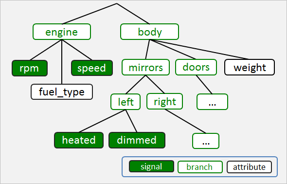

The W3C Vehicle Signal Server Specification defines a WebSocket based API that enables
client applications to get, set, subscribe and unsubscribe to vehicle signals and data attributes.
The purpose of the specification is to promote a Server API that enables application
development in a consistent manner across participating automotive manufacturers.
It is recommended that this Vehicle Signal Server Specification (VSSS) is read in conjunction with the
W3C Vehicle Signal Client Specification (VSCS) and the GENIVI Vehicle Signal Specification (VSS).
The Vehicle Signal Client Specification defines an API that wraps the data access and security primitives
defined in this Server Specification. It has been defined to support the development
of 'standards-compliant' JavaScript libraries that can be used by web based clients.
It is assumed that native clients (written for example in C/C++) and managed runtime clients
(written in languages like Java or C#) will invoke the WebSocket Server API using standard WebSocket
libraries that have been created specifically for those languages.
The GENIVI Vehicle Signal Specification (VSS) defines the set of vehicle signals and data that
are exposed via this Server Specification. The term 'signal' is used here to represent an item of
data that can vary over time, for example vehicle speed, whilst the term 'static data' is used to
denote a temporally unchanging property like vehicle width.
This Server Specification describes a discovery mechanism that defines the set of signals and data
that a particular client can access at a particular point in time. It is recognized that some automobile
manufacturers may expose more signals and data than others. The Vehicle Signal Specification supports both
extensibility and the ability to define private branches.
In addition, the 'tree' of signals that is accessible at any point in time may also vary depending
on standard access control principles. That is, it can vary based on the identity of the user (person or
organisation) requesting the data and/or the device (e.g. vehicle) where the request originates.
To support this, the Server Specification describes a token based mechanism that can optionally
be used to pass tokens to the WebSocket Server to represent the user of an application and the device that
the application is running on.
The target platform supported by the specification is exclusively passenger vehicles. Use of this
specification for non-passenger applications (for example heavy machinery, marine and airline infotainment) is
not prohibited, but is not covered in the design or content of the API and therefore may be insufficient.
Initially, a typical use case of Vehicle Information might be the implementation of a 'Smart Mechanic'
application that provides vehicle status information including, for example, tire pressure, engine oil level,
washer fluid level and battery status. Future use case innovations in transportation, safety, navigation,
smart energy grid and consumer infotainment and customization are all possible through this specification.
Web developers building interoperable applications based upon this API, will help empower a common web platform
across consumer devices and passenger vehicles consistent with the Web of Things.
Introduction
The vehicle SHALL expose vehicle signals via a WebSocket. This will
enable a client to GET or SET vehicle signals and data; to SUBSCRIBE to receive
notifications and to UNSUBSCRIBE from receiving notifications.
A future revision of this specification may consider additionally exposing vehicle signals
via a RESTful web service but this is out of scope for this version of the specification.
The W3C WebSocket API is defined here and
the WebSocket Protocol is defined in
RFC6455.
A component or module running on the vehicle is required to open
a WebSocket connection to enable secure access to vehicle signals.
In this specification this module will be referred to as the ‘WebSocket Vehicle Signal Server’ (WVSS)
or for simplicity as ‘the server’.
This specification assumes that a single WebSocket is used to
enable communication between the client Application and the server
in order to reduce processing overhead.
It is not explicitly prohibited for the client to request
that the server opens more than one WebSocket. However, the server
MAY refuse to open a subsequent WebSocket connection and the client will
be responsible for handling this gracefully.
If more than one WebSocket connection is established between a
client Application and the server then each connection will be
managed independently. For example, subscriptions created using a
particular WebSocket connection will only trigger notifications via
that connection and the client must use that WebSocket instance to
unsubscribe.
If more than one WebSocket connection has been established
between one or more clients and a particular server instance, there
is a risk that race conditions and concurrency issues could occur.
An example of this would be, where two or more WebSocket connections
are used to update a particular setting at the same time.
Unless explicitly stated otherwise, the client can only assume
that the server will implement a simple concurrency model where lost
updates and dirty reads could potentially occur if the server has
more than one WebSocket connection open.
An example of the usage of this API is provided below for illustration purposes.
This is not intended to be commercial code.
// open WebSocket
var vehicle = new WebSocket("wss://wwwivi", "wvss1.0");
// establish authorization
vehicle.onopen = function () {
vehicle.send({"action": "authorize",
"tokens": {"authorization": "<user_token_value>"},
"requestId": 103});
};
// request a signal
if (vehicle.readyState === OPEN) {
vehicle.send({"action": "get", "path": "signal.public.global.speed"});
// process messages from the server
vehicle.onmessage = function(event){
var msg = JSON.parse(event.data);
if(msg.path == "signal.public.global.speed" && msg.value){
console.log("The current speed is " + msg.value);
}
};
}
// close the WebSocket
vehicle.close();
The following example shows a JavaScript client subscription request and response.
// set a subscription, assuming the same authorization and set up from Example 1
if (vehicle.readyState === OPEN) {
vehicle.send({"action": "subscribe", "path": "signal.public.drivetrain.rpm",
"requestId": 104});
vehicle.onmessage = function(event){
var msg = JSON.parse(event.data);
if(msg.hasOwnProperty("requestId") && msg.requestId == 104){
console.log("Latest RPM is " + msg.value);
}
};
}
This specification defines conformance criteria that apply to a single product: specifically the 'in-vehicle'
WebSocket Vehicle Signal Server that implements the interfaces, semantics and behaviour
defined in this document. For simplicity, this will usually be referred to as the 'WebSocket Server' or just 'the server'
Terminology
The term 'WebSocket' when used in this document, is as defined in the W3C WebSocket API
(see here) and the WebSocket Protocol
(see RFC6455).
Architecture
In a typical vehicle design, signals and data are transmitted between Electronic Control Units (ECUs) connected
via internal vehicle networks. These include Controller Area Networks (CAN), Media Oriented Systems Transport (MOST)
and Local Interconnect Networks (LIN). ECUs on these networks broadcast messages on network buses, and other ECUs on the
bus respond to the messages.
In the component diagram included below, the internal vehicle CAN, MOST and LIN networks and the ECUs that communicate
via these networks are abstracted and for simplicity, represented by the System component.
For safety, security and commercial reasons not all clients should be able to GET, SET or SUBSCRIBE to particular vehicle
signals. As a consequence, access-control must be managed so clients cannot simply connect directly to ECUs or to CAN,
MOST or LIN network buses.
The vehicle signals and data that are available within the wider vehicle System will be exposed in a controlled manner to
the Web Socket Server. The interface and communication mechanisms that are used between the vehicle System and the
Web Socket Server are outside of the scope of this specification.
Diagram showing Components that implement the W3C Vehicle Signal APIs
The WebSocket Server will in turn expose vehicle signals and data to its clients in a controlled way by
implementing the interface, methods and behaviour defined in this Vehicle Signal Server Specification(VSSS).
One of the responsibilities of the WebSocket Server is ensuring that signals and data are exposed in a way that is consistent
with the Vehicle Signal Specification (VSS). This defines a 'tree-like' logical taxonomy of the vehicle, where major
vehicle structures (e.g. body, engine) are at or near the top of the tree and the logical assemblies and components that
comprise them, are defined as their child nodes. Each of these child nodes is further decomposed into its logical constituents
and the process repeated. The final 'leaf nodes' (in what is formally, a Directed Acyclic Graph) represent the signals and data
exposed by ECUs. An example VSS tree is shown below:

Diagram showing an example Vehicle Signal Tree
Signals are named according to their path using the dot notation e.g. engine.rpm.
Please note that the VSS tree shown in the diagram is for illustrative purposes only. The particular set of vehicle
signals that are exposed by the WebSocket Server can be obtained by invoking the server's 'getVSS method. Invoking this method
will return metadata that describes which signals and data attributes could potentially be returned provided that the user and/or
device is suitably authorised. This and other valid WebSocket Signal Server actions are defined in more detail
here.
The methods defined on the WebSocket Server interface may be invoked by different types of on-board and off-board clients.
The clients running on the vehicle fall into one of two major categories:
Applications can access vehicle signals and data and have a User Interface that the driver or passengers in the
vehicle can interact with.
Agents typically have no user interface and may be implemented as a 'service'. This can also invoke methods
exposed on the WebSocket Server but unlike Applications they can connect to one or more off-board (V2X) internet Servers
in order to send data off-board.
Both Applications and Agents can be subdivided into those that are 'Web Based' and implemented using Web Standards
(HTML, CSS, JavaScript) and run in a 'Web Runtime' and those that run in their own process, implemented using Native languages
and libraries (e.g. C,C++ or Qt) and those that run in a Managed Runtime Environment and are written using languages like
C# or Java.
Web Applications and Web Agents may directly invoke the Vehicle Signal Server interface exposed by the WebSocker server
but it is expected that they will typically access vehicle signals and data via a JavaScript Library that implements the
W3C Vehicle Signal Client API. (TODO Add Link). The Client API is designed to 'wrap' the W3C Vehicle Server Specification
API to make it easier for Web based clients to access vehicle signals and data in a controlled way.
For clarity, 'in-vehicle' clients include both those clients that are running on an ECU in the vehicle itself,
e.g. on an ECU that implements an In Vehicle Infotainment (IVI) system, but also to Applications running on a user's
device, for example a phone or tablet, that is connected to the vehicle via the vehicle's WiFi client (if one exists).
In addition to local, in-vehicle Applications and Agents, a variety of internet-based clients and servers may request
access to vehicle signals and data.
However, when a vehicle is not being used, most electrical systems will be shut down in order to maximise battery life. This
may include the systems that enable connectivity. Then, when the vehicle is powered up, various systems will start-up, including
those that provide off-board connectivity and the vehicle will typically connect either to a local WiFi network or to a Mobile
Network Operator and dynamically be assigned an IP address.
At this point, internet based clients and servers do not know the dynamic IP address that was assigned to a specific vehicle.
So normally, a vehicle will have to connect to a well known endpoint (e.g. a Vehicle to Everything (V2X) Server, mutually
authenticate and 'register' with the server passing it a unique identifier e.g. its Vehicle Identification Number (VIN).
From that point on, the server has the IP address that is currently assigned to a vehicle with a particular VIN, and can share this
information with other internet based clients and servers, which are then able to send messages to the vehicle.
The component diagram shows four different types of internet based clients. A user may use a Web Page or a
Web Application running on a phone or tablet to request access to vehicle signals on a particular vehicle. Alternatively
these signals could be accessed using a Native or Managed Runtime Application or via another automated
Client System or service e.g. the Traffic Management System in a 'Smart City'.
Once a vehicle has registered its current IP address with a server, it would be possible for the server to pass the
vehicle's IP address to other systems. From that point, any system that has the vehicle's IP address could potentially send
messages directly to an endpoint exposed on the vehicle. However, if the vehicle loses connectivity and is dynamically
assigned a new IP address, it will need to re-register its new IP address, and the new address will need to be communicated to
any interested parties. For simplicity, this is not shown, in part because this connectivity only becomes possible after the
vehicle has registered with at least one off-board server (as shown) but also because these scenarios do not affect the interface
and behaviours defined in this WebSocket Server Specification
Security and Privacy Considerations
Introduction
The server implementation MAY optionally restrict access to one or more vehicle signals so that they can only
be accessed in response to a request from an authorized user and/or device. This could be for a variety of
reasons, including safety, privacy or commercial considerations.
Hence, a request to GET, SET, SUBSCRIBE or UNSUBSCRIBE to data may require the client to demonstrate
to the server that the request is from one or more suitably authorized Security Principals.
The different types of Security Principal, the approach taken to control access to signals and the importance of data privacy are described in the sections that follow.
Security Principals
The types of security principal will include:
Type
Description
User
A person, system or organisation responsible for making the request e.g. driver, Emergency Services,
Smart City Traffic Management System.
Device
Vehicle or device where the request originates. Could for example be a user's Consumer Electronics
(CE) device connected to the vehicle's WiFi hotspot or another vehicle in a convoy; an Electronic Control
Unit (ECU) on the same vehicle or any internet connected system e.g. a Web of Things (WoT) device.
Access Control and Authorization
When a client makes a request to access signal data it is performing the request on behalf of one or more
Security Principals, that is, for a particular user and/or vehicle/device.
Access to signals will be managed and controlled by the server. The server MAY elect not to enforce access
controls on a particular signal or set of signals and to enforce different access controls on other signals.
For each security principal that must be authorised by the server, the client SHALL obtain and pass a security token
e.g. an OAuth 2.0 token (see RFC6749) to the server using a message
containing an 'authorize' action as defined here.
A server implementation MAY require that a request for a particular signal includes a security token for
both the user (e.g. driver of the vehicle) and for the device (e.g. the vehicle) that is hosting the client.
A request for a different set of vehicle signals MAY require that only the user is authorized or that only the device
is authorized to access particular signals.
WebSocket Channel Authorization
The client MAY send a message with an 'authorize' action to modify the access-control state of the WebSocket channel.
The message structure is defined in detail here.
The following diagram illustrates a scenario where the client requests vehicle speed. In this example scenario, this
signal is not under access control and so the server returns a message containing the requested data. The client then
requests that the server sets the vehicle trunk status to open and the server demands that the client passes access-control
credentials before satisfying the request. The steps are shown in more detail in the diagram below:
Diagram showing WebSocket Security Token flow
After receiving a message with an 'authorize' action the server will attempt to verify the tokens e.g. by checking
with the issuing Security Authority. If all of the tokens that are passed to the server are valid, it will return
a success response and all subsequent requests received by the WebSocket instance will have elevated access control
privileges. Specifically, each of the GET, SET, SUBSCRIBE and UNSUBSCRIBE actions will have the access control rights
that the server deems to be appropriate for the security principals represented by the token(s).
If the client sends a subsequent 'authorize' message to the server with different token value(s). If one or more of these
are invalid, then the server will return an error response and the WebSocket access control status will remain unchanged.
However, if the new token values are valid, then the server will return a success response and the access control
privileges associated with the new token(s) only, will apply for all requests from that point.
If the client or the server close the WebSocket connection and a new WebSocket instance is opened, then it will be
opened without elevated access control privileges.
This server specification defines a standardized, token based approach for access control that includes specific error
responses for common user and device access control scenarios. It is important however, that the security model is extensible.
Hence, the server MAY implement any type of token that is consistent with this standardized approach and MAY optionally
define additional token(s) for other Security Principal type(s). If this is the case, it is expected that the precise type of security tokens that are supported by a particular server
implementation, the format of those tokens and all additional error codes and reasons (e.g. to indicate that an
additional token type has expired and needs to be renewed) will be defined in the Server's documentation.
Use of Encryption
To support a layered security model and to help establish a 'defence in depth', all vehicle signal communications
between the client and server MUST be strongly encrypted. This is to make it more difficult for an attacker to eavesdrop or
tamper with the security tokens; the request data or the response payload.
One way in which this may be implemented is for the client and the server to use a Public Key Infrastructure (PKI)
approach, where the client verifies the server's identity by checking the server's X.509 certificate and the client and
the server negotiate to establish a secure Transport Layer Security (TLS) 'tunnel'.
The WebSocket protocol mandates that if a client requests that the server opens a WebSocket connection and the request
is received over HTTPS, then the WebSocket will be establised over TLS, that is, a secure 'wss' connection will be created.
Token Renewal
Each security token SHALL have a specified lifetime during which it is valid. If on receiving a request for signals that are
subject to access-control, the server determines that the request is unauthorised because the token has expired, the server
will return an error response indicating the fact and the client will request a new token from the Security Authority and
repeat the request.
If the server returns an error response indicating that the request is forbidden, renewing the security token will
not make the request valid. In this case, the client should not repeat the request unless some other change has been made
that may mean the request is now valid.
If the client application is an HTML Application running in a web
runtime or is a web page running in a browser, the WebSocket
instance may either be instantiated natively or be created using a
'standards compliant' WebSocket JavaScript library.
A WebSocket can also be initiated from a native (e.g. C++) Application
or from an Application written using a 'Managed Runtime' language like
Java or C#. It is assumed that native and managed clients will use a
suitable standards compliant WebSocket library to request that a
WebSocket connection is opened on the server.
A client running on the vehicle will be able to connect to the
WebSocket Server instance using the hostname 'wwwivi' and will use the
default 443. The hostname 'wwwivi' may locally be be mapped to the localhost
IP address 127.0.0.1 e.g. by adding an entry to the etc/hosts file.
The sub-protocol name will always be 'wvss' with a version number suffix, e.g. wvss1.0
var vehicle = new WebSocket("wss://wwwivi", "wvss1.0");
RESTful web services are out of scope for the first revision of
this specification, but could be considered for addition in a later
version.
To support ‘defence in depth’ and a layered security approach,
connections between clients and servers will be strongly
encrypted. This is to make it more difficult for an attacker that
has succeeded in installing malicious code on a vehicle to
eavesdrop, hijack security tokens or impersonate valid security
principals in order to get and set sensitive vehicle signals.
The client SHALL connect to the server over HTTPS and request that
the server opens a WebSocket. All WebSocket communications between
the client and server MUST be over ‘wss’. Non encrypted communication
will not be supported, hence the server MUST refuse ‘ws’ connection requests.
For security reasons, clients will not be able to connect
directly to ECUs or to CAN, MOST or LIN networks. All access will be
via WebSocket. This allows the server to securely control access to
vehicle signals.
The client MUST use the WebSocket send method, defined
here,
to pass request messages to the server. The message signature SHALL be:
void WebSocket.send(DOMString request)
The request object MUST be one of the request objects defined in this section. The client SHALL
receive responses from the server using the WebSocket >onmessage
WebSocket.onmessage = function(obj){
// process data
}
Where 'obj' is of type DOMString and contains the response message sent by the server. The DOMString
argument MUST contain a JSON structure that defines a request object, the format and content of which is
defined later in this section.
The client SHALL receive data requests from the server using the WebSockets onmessage API, as follows:
WebSocket.onmessage = function(object){
// process data
}
The response object shall correspond to the client's request and MUST be one of valid response objects defined
in the table below.
Unique id value specified by the client. Returned by the server in
the response and used by client to link the request and response
messages. The value MAY be a Universally Unique Identifier (UUID).
subscriptionId
string
Integer handle returned by the server to uniquely identify each subscription.
token
object
Structure containing one or more security token (e.g OAuth2) name/value pairs.
timestamp
DOMTimestamp
The time that the server returned the response (expressed as number of milliseconds).
value
any
The data value returned by the server. This could either be a basic
type, or a complex type comprised of nested name/value pairs in JSON
format.
TTL
int
Returns the time to live of the authentication token.
filters
object
Provides a filtering mechanism to reduce the demands of a sbscription on the server.
The Action enumeration is used to define the type of action requested by the client.
All client messages MUST contain a JSON structure that has an 'action' name/value pair and the
value of the 'action' property MUST be one of the values specified in the enumeration:
authorize
Establish user permissions.
get
Enables the client to get a value once.
set
Enables the client to set a value once.
subscribe
Enables the client to receive a notification containing a JSON data structure with values for one or more
vehicle signals and/or data attributes. The client requests that it is notified when the signal changes on the server.
unsubscribe
Allows the client to notify the server that it should no longer receive notifications based on that subscription.
getVSS
Allows the client to request the structure of the vehicle signal specification.
To enable access to signals that are under access control, the client can optionally pass a message with an
'authorize' action to the server. The structure of the message and the associated success and error responses
are defined below.
The 'tokens' JSON fragment may contain just an 'authorization' name/value pair to pass only
the user token or just a 'www-vehicle-device' pair to pass the only the vehicle token or it may include both
name/value pairs as illustrated below:
// Pass user token only
vehicle.send('{ "action": "authorize",
"tokens": { "authorization": "<user_token_value>" },
"requestId": "<some_unique_value>"');
// Pass vehicle/device token only
vehicle.send('{ "action": "authorize",
"tokens": { "www-vehicle-device": "<device_token_value>" },
"requestId": "<some_unique_value>"');
// Pass tokens for user and device
vehicle.send('{ "action": "authorize",
"tokens": { "authorization": "<user_token_value>",
"www-vehicle-device": "<device_token_value>" },
"requestId": "<some_unique_value>"');
In the case where the client has subscribed to a path which
returns a complex type, the value shall be returned as name
value pairs in a JSON object. The format MUST be as defined
by the Vehicle Signal Specification.
A set request may be sent by the client in order to set the value of a signal on the vehicle,
such as locking doors, opening windows and setting HVAC. The server shall respond
with a success or error response. The ability to set a signal is dependent upon appropriate
authorization and may be denied by the server implementation.
Vehicle data subscriptions provide data to the client whenever the signal changes on the server,
unless otherwise specified using Server Side Filtering. The server MAY reduce the number of notifications
sent to the client in order to reduce processing demands, particularly when the client has subscribed to
continuously varying signals.
When the client makes a request to the server to create a new
subscription, a JSON data object will be returned. This will contain
the attributes that were passed to the server to make the
subscription and a 'subscriptionId' integer handle value which is used to
uniquely identify the subscription.
The client can use the 'requestId' value to associate the successful
subscription response with the original request.
The 'subscriptionId' value is a unique value, created by the server and
which will be used internally by the server to manage subscriptions
on that WebSocket instance.
The subscription id value may be used by the client to
unsubscribe from receiving future notifications, by passing the
handle value to the server with the unsubscribe action.
To differentiate subscription response from responses for ‘GET’
requests, subscription responses shall additionally include the
subscription id value that identifies the subscription that
triggered that notification.
The server will ensure that a new unique subscription id value is
returned for each successful subscription request on a particular
WebSocket connection. However the server does not guarantee that
subscription handle values are unique between different WebSocket
instances.
The client should always unsubscribe from receiving notifications when it is no longer interested in receiving them. Over a long vehicle journey, this will significantly reduce the processing required by the server and enable the server to free memory, making it easier for the server to remain responsive to requests from the client.
The client sends the unsubscribe action with the ID of the subscription which needs to be unsubscribed. If the client wished to unsubscribe from all of its clients, it can send a subscription ID of 0. If an invalid ID is sent the server will return an error, as shown in the following examples.
The client may request the current vehicle signal structure from the server using the getVSS action. The server will return the VSS structure currently available to the user, available to them under the current access control. The client is able to request the structure from any point in the VSS tree, such as only those signals within the chassis branch of the tree, by specifying the desired path. If the path is not set, the response will contain the entire tree.
A 'Filter' may be specified to enable Server side filtering
to be used in order to throttle the demands of subscriptions on
the server. This may enable the reduction of traffic if the
developer has received a 429 - Too Many Requests error
message. This can be implementation dependent allowing a number
of potential filtering mechanisms, such as ranges, intervals and
minimum changes. This can be implemented using the "filters"
option.
The subscription currently defaults to sending values to the
client only onchange, however this may cause unnecessary
processing demands on the vehicle server.
Interval - request that the server provides a notification every 'n' milliseconds.
If the client does not need the data more frequently, this allows the client to reduce the
load on the server.
Range - provide a value only when within a given range
Minimum change - provide data when a value has changed by
a specified amount
If the filter is not set or unsupported the notification frequency will be
determined by the server.
//client receives data every 100ms
{ "action": "subscribe", "path": "<any_path>",
"filters": { "interval": 100 },
"requestId": "<some_unique_value>" }
//client receives data when the value is between 100 and 200 (inclusive)
{ "action": "subscribe", "path": "<any_path>",
"filters": { "range": { "above": 100, "below": 200 } },
"requestId": "<some_unique_value>" }
//client receives data when the value is below 100 (inclusive)
{ "action": "subscribe", "path": "<any_path>",
"filters": { "range": { "below": 100 } },
"requestId": "<some_unique_value>" }
//client receives data when the value changes by 100 units
{ "action": "subscribe", "path": "<any_path>",
"filters": { "minChange": 100 },
"requestId": "<some_unique_value>" }
//client receives data when the value changes by 100 units
{ "action": "subscribe", "path": "<any_path>",
"filters": { "minChange": 100 },
"requestId": "<some_unique_value>" }
//client receives data when the value is above 200 (inclusive)
//and the value changes by 20 units
{ "action": "subscribe", "path": "<any_path>",
"filters": { "range": { "below": 200 }, "minChange": 20},
"requestId": "<some_unique_value>" }
When the range filter is used a final message will be sent when the value returned is outside
of the specified range. For example, if the the range states { "below": 100 }, a final value may
be received at 101 to indicate that the value is now out of range.
The client should not specify a minimum change amount that is smaller than it needs - in order to prevent
adding unecessary load on the server. The server shall return a '429 - Too Many Request' error response if
it is unable to fulfil the request made by the client.
The section that follows defines the error responses that shall be supported by the server.
For some error codes, for example '401 (Unauthorised)' there can be more than one cause.
The error number that is returned will be the HTTP Status Code Number e.g. 401.
An error reason will also be returned, this will contain a pre-defined string value that
can be used to distinguish between errors that have the same code (e.g. '401 Unauthorized)' but a difference cause.
The error message will be used to provide message text describing the cause in more detail.
The server implementation will support at least the error numbers and reasons listed in the table below.
Error Number (Code)
Error Reason
Error Message
304 (Not Modified)
not_modified
No changes have been made by the server.
400 (Bad Request)
bad_request
The server is unable to fulfil the client request because the request is malformed.
401 (Unauthorised)
user_token_expired
User token has expired.
401 (Unauthorised)
user_token_invalid
User token is invalid.
401 (Unauthorised)
user_token_missing
User token is missing.
401 (Unauthorised)
device_token_expired
Device token has expired.
401 (Unauthorised)
device_token_invalid
Device token is invalid.
401 (Unauthorised)
device_token_missing
Device token is missing.
403 (Forbidden)
user_forbidden
The user is not permitted to access the requested resource. Retrying will not help.
403 (Forbidden)
user_unknown
The user is unknown. Retrying will not help.
403 (Forbidden)
device_forbidden
The device is not permitted to access the requested resource. Retrying will not help.
403 (Forbidden)
device_unknown
The device is unknown. Retrying will not help.
404 (Not Found)
invalid_path
The specified data path does not exist.
404 (Not Found)
private_path
The specified data path is private and the request is not authorised to access signals on this path.
404 (Not Found)
invalid_subscriptionId
The specified subscription was not found.
406 (Not Acceptable)
not_acceptable
The server is unable to generate content that is acceptable to the client
429 (Too Many Requests)
too_many_requests
The client has sent the server too many requests in a given amount of time.
502 (Bad Gateway)
bad_gateway
The server was acting as a gateway or proxy and received an invalid response from an upstream server.
503 (Service Unavailable)
service_unavailable
The server is currently unable to handle the request due to a temporary overload or scheduled maintenance (which may be alleviated after some delay).
504 (Gateway Timeout)
gateway_timeout
The server did not receive a timely response from an upstream server it needed to access in order to complete the request.
The server may optionally return additional error codes. It is expected that if this is the case, they will be defined in the Server Documentation.
Wherever possible the Server will return a standard HTTP error code where one has been defined for the error condition.
See for example RFC7231, RFC7235,
and RFC6585.
The WebSocket may be closed by either the client or the
server by invoking the ‘close()’ method on the WebSocket
instance.
The following example shows the lifetime of a WebSocket on
the client:
// Open the WebSocket
var vehicle = new WebSocket("wss://localhost:4343", "VISS1.0");
// WebSocket is used to GET, SET, SUBSCRIBE and UNSUBSCRIBE
…
// Close the WebSocket
vehicle.close();
The WebSocket server may terminate the WebSocket connection
if it has not received a request for a period determined by
the server. It is the client’s responsibility to handle this
gracefully and to recover and for example request new
subscriptions, where these are required.